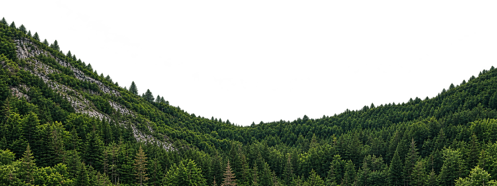
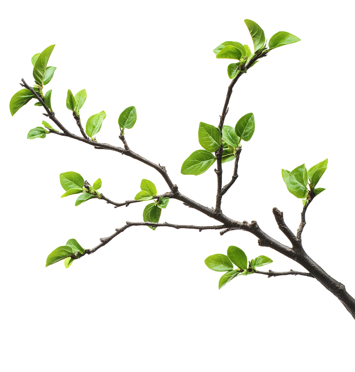

디지털 조류 박물관 프로젝트 ‘버드워치’는 다양한 조류의 생태, 형태, 서식지, 분포, 행동 특성 등의 정보를 디지털 콘텐츠로 수집·정리하고, 누구나 쉽고 흥미롭게 탐색할 수 있도록 구축하는 디지털 아카이브 프로젝트입니다.
기존의 인쇄 도감이나 오프라인 전시 공간의 한계를 넘어, 사진·영상·음성·지도·설명 자료 등을 통합하여 새들의 생태와 다양성을 생생하게 전달합니다. 또한 종별 검색, 분류 체계, 서식지별 탐색 등 다양한 디지털 기능을 활용해 이용자가 조류에 관한 지식을 능동적으로 습득할 수 있도록 지원합니다.
본 프로젝트는 단순한 조류 정보 제공을 넘어 생물다양성 보전, 생태교육, 디지털 지식 자산화 및 문화·환경 콘텐츠 확산을 목표로 합니다. 이를 통해 조류에 대한 대중의 관심을 높이고, 자연과 인간이 공존하는 생태적 가치에 대한 이해를 확산하고자 합니다.


새소리 분석 및 청음을 할 수 있는 아카이브를 제작합니다.
.jpg)
시민 참여를 통해 지역별 조류 관찰 지도를 제작합니다.
.jpg)
사라져가는 새들의 이야기와 보호의 필요성을 전합니다.
.jpg)
다양한 조류 보호 캠페인을 한눈에 볼 수 있습니다.
.jpg)
한국의 소중한 겨울 손님, 두루미가 안전하게 머물 수 있도록 철원 평야 일대의 서식지 보전 활동을 이어갑니다. 멸종위기 철새들이 평화로운 겨울을 보낼 수 있도록 많은 관심을 부탁드립니다.
2024.11.28
우리 주변에서 가장 흔히 만날 수 있는 대표적인 텃새 까치의 번식 과정과 도심 속 적응기를 관찰했습니다. 인간과 새가 공존하는 도심 생태계의 중요성을 조명합니다.
2024.11.28
맑은 계곡과 숲속 저수지를 찾는 천연기념물 제327호 원앙의 서식 환경 실태를 조사했습니다. 수려한 깃털을 가진 원앙이 안심하고 머물 수 있도록 깨끗한 수질 보호 대책을 마련합니다.
2024.11.28
푸른빛의 매혹적인 자태를 뽐내는 파랑새가 번식을 위해 한국의 숲을 다시 찾았습니다. 여름 철새들의 쉼터이자 보금자리가 되는 국내 고목림과 산림 자원의 소중함을 알립니다.
2024.11.28